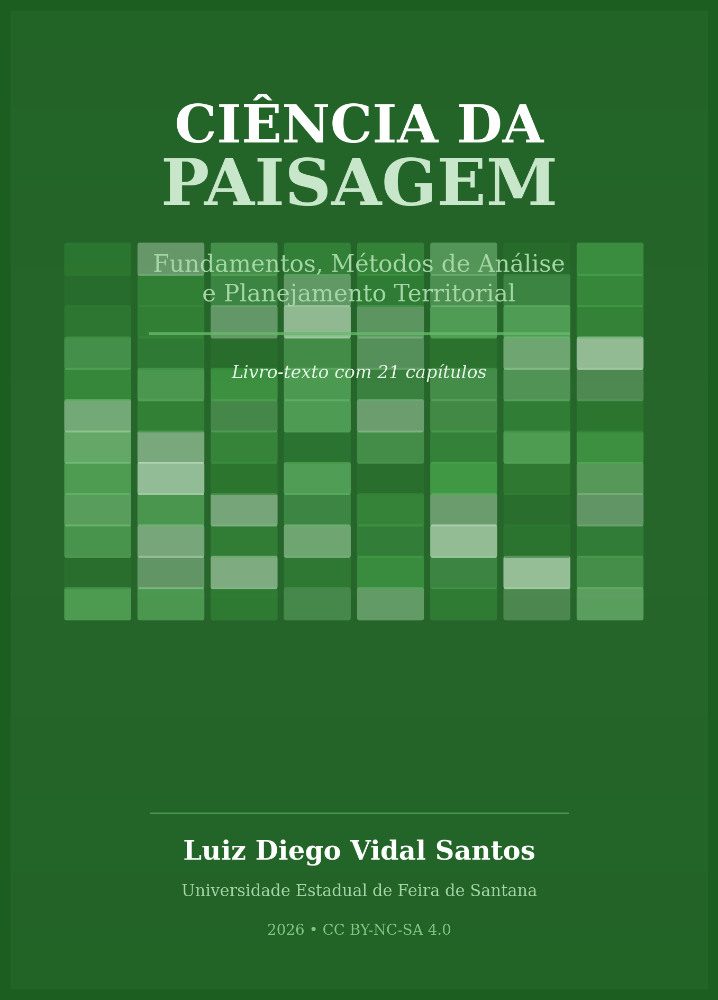

Análise da Paisagem
Fundamentos, Métodos e Planejamento Territorial
Livro-texto sobre Análise da Paisagem, integrando ecologia da paisagem, métricas espaciais, sensoriamento remoto, geoprocessamento e planejamento territorial para gestão sustentável de paisagens tropicais.
![]()
Sobre este livro

Este é o site do livro “Ciência da Paisagem: Fundamentos, Métodos de Análise e Planejamento Territorial”, escrito por Luiz Diego Vidal Santos.
A Ciência da Paisagem investiga as relações entre padrões espaciais e processos ecológicos numa perspectiva multiescalar, integrando ecologia, geografia, sensoriamento remoto e planejamento territorial. Em regiões tropicais, a análise da paisagem é ferramenta indispensável para compreender a dinâmica de uso e cobertura do solo, avaliar a fragmentação de habitats e planejar corredores ecológicos que assegurem conectividade funcional entre remanescentes.
Este livro apresenta de forma integrada os fundamentos teóricos, os métodos de análise espacial e as estratégias de planejamento territorial que compõem a Ciência da Paisagem contemporânea. Cada capítulo combina base conceitual, procedimentos metodológicos em SIG e sensoriamento remoto, métricas quantitativas e estudos de caso em paisagens tropicais.
O conteúdo está organizado em quatro partes. A Parte I (Fundamentos) constrói o arcabouço conceitual da ecologia da paisagem, abordando o modelo mancha-corredor-matriz, as escalas espaço-temporais e a percepção da paisagem. A Parte II (Métodos de Análise) detalha as ferramentas operacionais, do sensoriamento remoto e SIG à quantificação de métricas da paisagem, fragmentação, conectividade e detecção de mudanças. A Parte III (Processos e Dinâmica) examina os processos hidrológicos, serviços ecossistêmicos, biodiversidade e mudanças climáticas na escala da paisagem. A Parte IV (Planejamento e Gestão) aborda restauração ecológica, corredores e áreas protegidas, modelagem de cenários e um projeto integrador de análise da paisagem.
Para quem é este livro
Este livro destina-se a estudantes de graduação e pós-graduação em Engenharia Agronômica, Ambiental, Florestal, Geografia e Ecologia, bem como a profissionais de planejamento territorial, gestão de bacias hidrográficas, conservação da biodiversidade e licenciamento ambiental. Pesquisadores em ecologia da paisagem, modelagem espacial e soluções baseadas na natureza também encontrarão conteúdo aplicável a suas investigações.
Como citar
Santos, L. D. V. (2026). Ciência da Paisagem: Fundamentos, Métodos de Análise e Planejamento Territorial. Disponível em: https://diegovidalcv.com.br/books/ciencia-paisagem/
Licença
Este livro é disponibilizado sob licença Creative Commons Atribuição-NãoComercial-CompartilhaIgual 4.0 Internacional (CC BY-NC-SA 4.0).